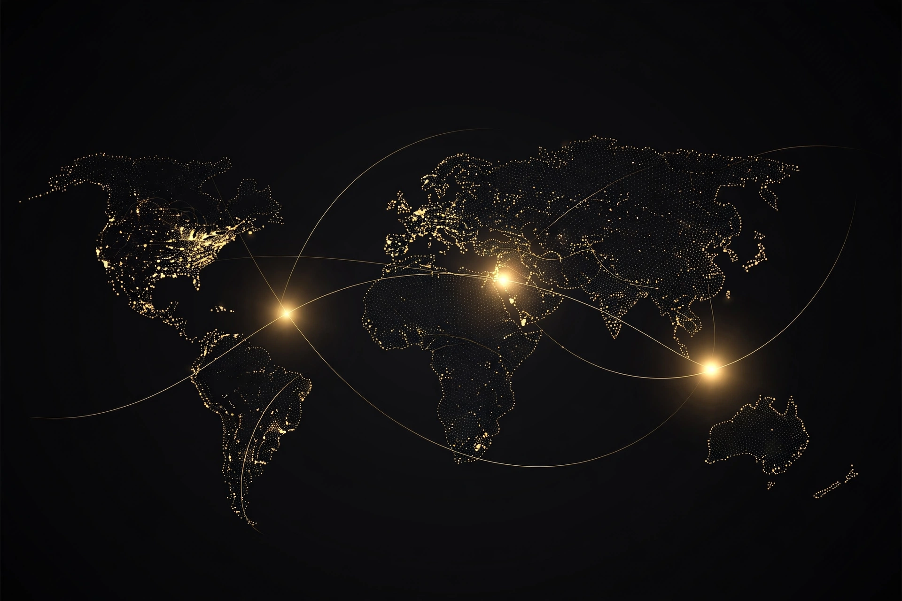

SCENE 01 · 知识管理
企业知识库与智能问答
内部的知识，找不到
产品手册、制度文件、老师傅的经验散落各处，新员工上手慢，同样的老问题反复有人问，经验留不住。把资料系统梳理一遍，建成一个能直接问的问答系统。
让 AI 真正进入企业的每一个工作流程。
From AI Potential to Business Reality.
探索企业复杂的业务流程
连接企业数据与现有系统
构建真正可执行的 AI Agent
将 AI 部署到生产环境
持续优化并创造业务价值
产品资料在一个系统里，客户问题在另一个群里，老师傅的经验在脑子里。系统、数据、流程彼此分散——这是我们进场时最常见的样子。
用数据管道和 API 把散落的系统、文档与知识库接通，信息开始在它们之间流动，而不是靠人来回搬运、反复核对。
Agent 接到任务后自己拆解、查资料、调用工具、执行，再把结果带回来——每一步都留痕、可核对，不是黑箱里变魔术。
演示谁都能做，能长期跑的系统要拼齐七块：模型、企业数据、API、工作流、权限、安全、监控。缺一块，上线就出事。
问答 Agent 查着你自己的资料回答，询盘 Agent 起草回复，雷达 Agent 盯着外部信息——在业务系统里协同干活，人去做只有人能做的事。
系统连通、流程跑顺，原本散乱的网络变得有序。效果不靠口号：试点前后各测一周，响应时长、节省工时、答对率，数字摆出来验收。
这两年很多企业买过 AI 工具、试过通用软件，最后又放下了。不是工具不行，是没人帮他们把工具接到自己的活儿上：通用大模型不懂你的产品和行话，通用软件不理解你的流程，企业自己又养不起一个技术团队。
FDE 是国际上已经跑通的解法——由美国数据公司 Palantir 首创：不把软件扔给客户，而是派工程师进入真实业务，和一线人员一起把技术做进流程，用实际效果而不是演示效果说话。近两年，头部 AI 企业都在采用这种做法。
长庚智能把这套打法用到徐州本地市场：服务对象就是几十人到几百人、生意已经跑起来、每天有大量重复信息处理工作的中小企业。工程师贴身服务，先从一个场景做起、快速交付。
技术不该停在演示里——
它要在你的业务里，一天一天地跑。
三个场景用的都是我们已经在自己业务里跑通的技术，搬到企业场景里做适配，不是从零摸索。可以单独立项，也可以从最痛的一个开始，跑顺了再接下一个——共用同一套数据管道，不重复建设。点开任意一个，看完整的交付内容与规格。
内部的知识，找不到
产品手册、制度文件、老师傅的经验散落各处，新员工上手慢，同样的老问题反复有人问，经验留不住。把资料系统梳理一遍，建成一个能直接问的问答系统。

对外沟通，耗人力
询盘回复慢、英文单据一份份人工整理，旺季积压、拖久了就丢单。这个场景专治业务员的重复劳动，让人去做只有人能做的事。
外部的信息，盯不住
招投标信息、竞品动态、能申的补贴政策，靠专人天天刷网页，漏一条就可能错过机会。让系统替你盯，重要的事不过夜。
不自研大模型——模型迭代太快，自研既跟不上也没必要。我们调用国内已备案的成熟模型服务，把精力放在数据质量、流程适配和交付效果上。模型随时可换，沉淀下来的企业数据和对流程的理解换不走。
一条硬规矩：交付给企业的每个数字，都要能说清是从哪里来的。数据不完整就不入库，来源说不清就明确标注——演示谁都能做，长期跑下来的记录做不了假。
长庚智能的核心技术底座由创始团队自主研发、持续运行。做没做过东西，打开系统看一眼就知道——以下系统随时可现场演示。
对数十个公开信息源全自动采集、去重与完整性校验，经 AI 翻译、提炼后按主题分发，并自动生成每日简报与每周专题简报，全程无人值守。
系统给出的每条记录都与真实结果自动比对，形成按来源统计的准确率档案。专门回答一个问题：系统给出的东西，到底准不准。
将美国证券交易委员会（SEC）官方申报文件结构化为可检索的公司数据库，关键数据逐项标注日期、来源与原文链接。
试点期每周同步一次进展：完成了什么、卡在哪里、下一步做什么。交付后转入维护期，按季度提交运行小结，让你随时清楚进展到了哪一步。
驻场梳理流程和数据现状，锁定最耗人、最易错的那个环节，看清楚：能不能用 AI 解、大概能省下多少时间。
用你企业自己的真实数据搭出可用原型，小范围先跑起来，边跑边按一线人员的反馈调。
小范围正式上线，按事先约定的指标验收：响应时长、节省工时、答对率，试点前后对照着测。
转入持续维护：管运维和小调整，季度运行小结；跑顺之后，再把下一个场景接上。
长庚的第一个客户就是长庚自己——我们给自己公司搭的问答和雷达先跑起来，你点开就能上手试。正式体验站随官网上线同步开放，这里先放可交互的演示样板。
演示说明：以上为前端演示样板，问答内容来自预置的示例资料（产品手册节选），用来展示「带出处、不编答案」的回答方式；接入企业真实资料后的正式版随项目交付。
让徐州的中小企业，
用得上真正的人工智能。
长庚，是黄昏时分最先亮起的那颗星。不喧哗，先把光给到——我们希望 AI 在你的企业里，也先从一个环节亮起来。
「长庚」是金星在黄昏时的古称——天刚擦黑，它最先亮起来。不喧哗，也不耀眼，但一直在。我们 2026 年 11 月在徐州铜山筹备这家公司时选了这个名字：不追热点，先在一个具体的地方亮起来。
我们做这家公司的原因很具体：徐州和淮海经济区有大量几十到几百人的企业，生意已经跑起来，却每天被重复的信息处理拖住。他们不是不需要 AI，是没人帮他们把 AI 接到自己的活儿上。长庚只做这一件事——派工程师进现场，从一个场景开始接。
公司由创始人刘宇恩全程负责诊断、开发与交付，不转包。核心技术底座由创始团队自主研发，已经在自己的业务里持续运行：先给自己用，跑通了，再给客户用。
能，这正是 FDE 模式要解决的问题。系统由我们搭好、维护好，你的员工只需要会提问、会看结果。交付时配操作手册，维护期内工作日响应，系统异常我们处理。
不会。你的数据只用于你自己的业务，不拿去训练模型，也不和别家客户的数据混在一起；调用的都是国内已备案的大模型服务，数据经过哪些环节可以查清。如果要求，知识库和业务数据可以部署在你自己的设备上。合作结束，数据完整交还。
试点验收以双方事先确认的实测指标为准——比如询盘首次响应时长、每天节省的工时、问答抽测答对率。达不到约定效果，可以协商调整范围。另外我们有一条规矩：不适合用 AI 解的场景，我们不接。
现成软件解决的是「一般企业的问题」，你的流程、产品资料、行话都是你自己的。多数企业卡住的地方不是没软件，是没人把软件接到自己的活儿上。我们的试点 2–4 周见效，就是让你先小步验证，再决定要不要往深里做。
我们扎根徐州铜山，优先服务徐州及淮海经济区的企业，驻场诊断和交付能到现场。纯线上的场景（如情报雷达）可以远程交付，具体在诊断时一起商量。
不会。合作结束，知识库与业务数据完整交还，不设退出障碍。留客户靠的是效果，不是靠把数据扣在手里——知识库按你的资料一条条建起来、用得越久越准，继不继续由效果说话。
加个微信，或者把右边的表填了生成一段联系文案。我们先帮你把这个场景拆一遍——能不能用 AI 解、大概能省多少时间，拆完你再决定做不做。